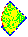
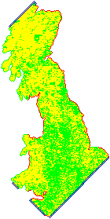
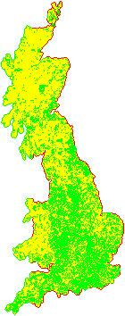
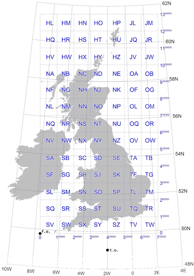

Domesday '86 Reloaded (Reloaded)
Back in the mid-1980s my primary (same thing as elementary) school suddenly told us we had to come up with content for a digital encyclopedia of the UK, conceptualised as a successor to William I's audit of his freshly conquered territory carried out exactly 900 years earlier. Yes, like the crowd-sourced Internet utopia envisaged in the mid-2000s, "Web 2.0", in which ordinary people are both the content providers and consumers, and will become empowered, and definitely won't turn into Nazis and storm the citadels of democracy. All the good parts of that somehow travelled back in time to 1985 (Marty). Except it wasn't really grass-roots, it was astro-turf: the BBC conspired with the schools to make it happen, in a top-down patrician Lord Reith type of way.
Even so, to my childhood mind, it's like I'm Ford Prefect doing field research for The Guide and unfortunately I've been stranded on this pathetic little planet for slightly longer than expected and I'm not really from Guildford after all (or indeed ever).
Then a year or so later the project was finished, and it was published on a couple of laser discs (nothing will ever sound more futuristic and cheesy) that could only be interactively explored on some expensive modified hardware. But it was in a way a groundbreaking exercise that seems now like it was made of uncanny magical reverse echoes of trends that would not truly emerge for decades.
Digital Obsolescence
Domesday '86 has since become the widely referenced example of digital obsolescence, mainly because to anyone looking to make a Luddite point, the obvious comparison is just so irresistible: the original Domesday book was still readable because paper is forever. This is of course nonsense: paper rots, is scribbled on, gets soggy, burns (okay maybe not both of those at once). Maintaining something in a readable form requires effort and attention, even if that means keeping it in a special room, away from children, floods or flames, touched only by people wearing those fancy white science gloves. Nothing lasts forever unless we lavish care on it. If a thing disappears, it's because no one cared.
And as it turns out, people did care about Domesday '86. Adrian Pearce's heroic efforts produced a recovered, fully digitised dataset (originally the images on the discs were just analogue video frames), which he made available online, but it disappeared on his death in 2008. In any case, the BBC held the copyright and 2011 they spun up a project to give the material a modern (well, 2011) web-based UI. But then they pulled the plug on that site, entrusting the material to the National Archive. Meanwhile a really hardcore authentic preservation/revival Domesday '86 project continues, aiming to emulate the original software and user experience as closely as possible.
So a happy ending? Well, not quite. As many have discovered, when the National Archive made a copy of the BBC's site, they just webcrawled it to make a static mirror, and stuck it online. None of the interactive elements work, except that if you start from a content page for an actual place, you can click links to go North, South, East or West, so it's like a classic text adventure game: tedious and irritating.
It's particularly galling that they also put a running clock's timestamp in the URL of each page as they copied it, e.g.
https://webarchive.nationalarchives.gov.uk/20120316094313/http://www.bbc.co.uk/history/domesday/dblock/GB-348000-534000
Right before the original BBC URL there's 20120316094313, and as if to maximise the frustration, this is different across the pages. By the look of it, they backed up that page On March 16th, 2012 at 09:43 and 13 seconds. Why is this bad? Because apart from that stupid timestamp, this is very nearly a deterministic URL. The GB-348000-534000 tells us the Ordinance Survey map coordinates for the south-west corner of the region covered by that page. But we can't make use of that fact unless we also know the exact time that they backed up that specific page. Ridiculous.
The Idea
It would be really cool if we could browser a modern map UX (i.e. Google Maps) on which there was layer of rectangles showing where the Domesday '86 project had data, and we could click on them to go to the official archive mirror page for that area. This would combine several advantages over conceivable alternatives:
- Inherent ability to compare today's landscape with The Past.
- No copyright issues: the map UX would only need the URLs of the Domesday archive pages, not any of the actual content.
- No need for any server backend!
That last point needs finessing a bit. With "modern" web technology it can just be a static site that can be deployed onto a webserver, downloaded into browsers, which can then do all the magic. Okay, yes, it depends on Google maps continuing to exist, and also browsers. But so does a lot of the economy, which means people care about those things, which means they'll continue to exist. Just gotta piggyback on things that already have that quality of being-cared-about for the best chance of survival.
So, to business.
Crawling the Mirror
We need to get around that timestamp problem. The only way to do this is to write a new web-crawler. We can start on any page, download the HTML, and look for the links:
That gives us up to four more pages to download, and we can discard any we already know about. Proceeding like this, we will effectively crawl outwards from the starting point until we reach the edge of the map. As the program crawls, it can just output URLs to a log file. I write each URL twice: once when I discover its existence from a link, and then again when I've actually downloaded its content.
Pompous Aside 1: This is a really good engineering concept: the append-only file format. It's incredibly robust. If the crawler quits unexpectedly then the log file tells us exactly how far it got and it can pick up where it left off.
In the log file, I prefix each URL with a letter:
Q- it's been "queued" for downloading after I found it in a linkA- "absent": the page had a heading telling us that there's no contentP- "present": it's got great 1986 content we all want to readE- "edge": got a 404 status from the download attempt
So each line is just a capital letter, a space, and a URL.
Pompous Aside 2: I could have parsed the URL into the bare numbers (the coordinates and the timestamp). But then I'd need to invent a format to write to the file. The URL is already such a format; yes, it's got tons of repeated baggage in it, but it's perfectly adequate. Don't rush to do something fancy and "proper" in the early stages of a project, because you'll probably just make it more complicated than necessary, to little advantage.
When I come to read the log, I can just take the P lines and ignore the rest. So I started the crawler running, with no throttling to avoid overloading the server. If you're from the National Archive and you're wondering why you had a weird traffic spike last week, now you know. Sorry.
I believe I started at the URL for Barnard Castle, a location held in special affection by the British. But I had to do the whole thing twice, because as well as URLs with GB coordinates, there are others with NI (Northern Ireland), and they don't join up, but in an interesting way that I promise has nothing to do with any trade border down the Irish Sea.
Rendering a Map, Because Why Not?
To pass the time as I impatiently waited for results, and to convince myself it was working, I wrote another script that would scan the logfile so far and render an image of the map.
Pompous Aside 3: a really good way to keep up your enthusiasm for a project in the early stages is to make it visual. Give yourself a way to see your machine working. A dry text log file is not an exciting or rewarding form of feedback. Turn numbers into graphics, animations, cool stuff. Visualise the machine.
How did I do that? Easy - the GB coordinates in the URL are really simple. Each page relates to an area 4km (East-West) by 3km (North-South). Why that aspect ratio? So it would fit on an old computer screen. These days it would be 8km by 4.5km to get a 16:9 ratio. If you divide the URL's coordinates by 4000 and 3000, you get (x, y) integer coordinates of a grid cell. So my render script would read the log and colour in pixels according to the current state letter. Here's an early run of it:

Note the diamond pattern (well, square rotated 45 degrees) - this is exactly what you'd expect from an outward crawl by the method I describe above. Also there's a lovely crinkly edge to the West, because that's the actual edge of the map (red pixels indicate E results from the log file). Here's one from a while later:

That's clearly dear old Blighty! And finally:

It's stretched vertically because my pixels are square, which is too tall because the area each pixel represents is a 4:3 oblong. Also there is a suspicious preponderance of green P pixels on the border where there aren't red ones. I suspected (correctly as it turns out) that this was a lie caused by a bug in my crawler: as well as the A pages that say they have no content (yellow), there are ones that say they're off the edge of the map. I should have classified those as A also. Darn it.
Northern Ireland appeared relatively quickly:
Not gonna lie, it was mildly thrilling to see those shapes appearing from the raw data in real time. But what to do with them next?
Maps Are Complicated
Drawing flat maps of a curved surface is really complicated. By the way if you subscribe to alternative theories of the shape of the Earth, stop reading now, because this will get upsettingly reality-based. Nowadays a global standard coordinate system has taken over: WSG 84. Every point on the earth is identified by two numbers:
- longitude is measured in degrees with the zero at the Greenwich Meridian, because… colonialism.
- latitude has the zero at the equator and +90 degrees at the North Pole, -90 degrees at the South Pole.
In a smart phone's browser there's an API you can call to get those two numbers. And in Google maps, you use those two numbers to specify a location. It all joins up nicely, and is simple to understand if you don't look too closely at the details (very much the UTC of coordinate systems, including the Greenwich origin.) And as the tectonic plates drift around the globe (seriously, Hawaii actually moves a metre every decade) there is a worldwide effort to keep maps up-to-date with this system. The land moves, but the coordinates stay still, in some weird negotiated sense.
It works great for most places where people gather in large numbers, because near the equator North-South lines are almost parallel. They start to converge as you get closer to the poles, so travelling "1 degree West" is a significantly longer journey in London than it is in Edinburgh. And at the poles the distortion becomes infinite and the longitude becomes meaningless. But who hangs out there? No one important.
Even so, on a local scale, historically, other coordinate systems were used. For the UK, Ordinance Survey has a fantastic document that is well worth at least skim reading. There's also the EPSG repository of worldwide coordinate systems, which gives each one an ID number, in accordance with bureaucratic tradition. The ones we care about here are:
- EPSG:4326 - the WSG 84 global standard.
- EPSG:27700 - the British National Grid, defined in 1936.
- EPSG:29901 - the Irish National Grid (1952).
The last two appear in the URLs with the GB and NI prefixes. We need to convert them to WSG 84, and that's a fiddly mathematics problem. The excellent OS document shows what we're dealing with:

Fortunately smart people already figured all this out and I can just pass the GB/NI coordinates and get back global long/lat coordinates. Well, almost. Any 40km-by-30km cell in the National Grid can be defined by two numbers, giving the location of the South-West corner. But in WSG it will be deformed by the transformation. It won't be a rectangle. Strictly speaking it won't even be a regular polygon because the edges will be curves. It will be the opposite of the above composite map: the WSG lines will be straight, so therefore National Grid lines will have to curve.
But our cells will still have four corners, and for simplicity I'm going to model them as regular polygons, so the grid will become a mesh of four-side polygons. To define each cell, I need four sets of coordinate pairs, giving the positions of the corners, which won't line up along lines of latitude/longitude.
Google Maps are Easy
Eager to see if my coordinate conversions were working, I spun up a simple Google Maps project, basing it on the fantastic Parcel bundling engine. Honestly, give it a try. It's like a dream version of Webpack.
Google Maps makes it very easy to draw polygons on the map: they have a specific API for that, and you just give it a list of longitude/latitude pairs. I initially did this with the individual cells, of which I think there are about 30,000. It took a while to open, and the zooming was painful. Clearly I needed to be a bit smarter about it than that. But it was an important exercise because it gave me confidence that I was heading in the right direction, and that all-important visual feedback.
Pompous Aside 4: Try the simple, dumb approach. You never know, it might work. If it doesn't, you'll find out what you need to know to fix it.
What we have here is a scaling problem. 30,000 polygons aren't individually meaningful, they're too fine grained. We need bigger grains. Let's divide the original grids up into 400km-by-300km "zones", each containing 100 of the original cells. We should then end up with ~100 zones, and we can render those as polygons, and paint them with an opacity that is just the number of cells in the zone divided by 100 to get a value between 0 and 1. That gives us a heat map of the density of cells in each region, so at the national zoom level we can immediately see the areas with the most information.
Then when the user zooms in closer, we can switch over to rendering the individual cells' polygons, but only for the zones that overlap with the currently visible portion of the map, so we don't overwhelm the platform. If you zoom in to that level and drag the map around, the code continuous "hit tests" which zones are now visible and creates or destroys their polygons accordingly.
Pompous Aside 5: Very often, the solution to a scaling problem consists of using a different design at different scales. Don't expect one general approach to scale smoothly. Systems that scale impressively often achieve this by having discontinuities, points where they switch between different modes as the scale increases. Maps themselves are a good analogy: national grids are more convenient for giving coordinates locally, and are still used for that reason, but they stop working at the global scale.
The data for all the zones and cells is actually linked into the source as a JSON file, meaning that the site doesn't need to call a custom server to download extra data. I was able to cut the size of the JSON file by over 80% by compressing each zone's list of cells, using the lz-string package's handy base64 format. Every time a zone scrolls into view, I decompress that zone's cell list on the fly.
Finally, when the user clicks a cell, we can navigate to the original archived page for that cell. One last cool thing I added this morning was browser history support, something that is very important for any web app. When the user clicks the Back button, we need to go back to where they were. Sometimes the meaning of "where we are" (in an app's UX) is ambiguous and open to debate, but when it comes to showing places on a map, clearly we are dealing with the archetypal concept of "where". So right before navigating to the archive site, I use history.pushState to capture the following in the address bar:
- the map's zoom level
- the longitude/latitude centre point of the map
- the GB or NI coordinates from the URL we're about to navigate to.
Then when the site loads up, I grab that info and obey it (I use the coordinates to show the last-visited cell in a different colour).
The End.